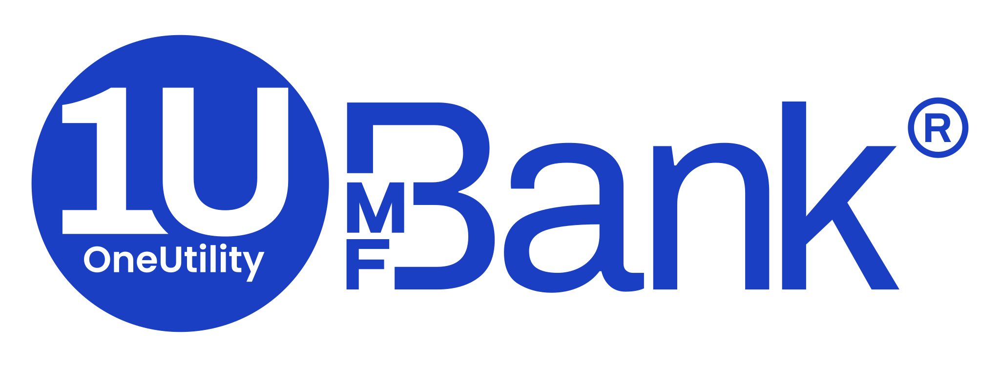
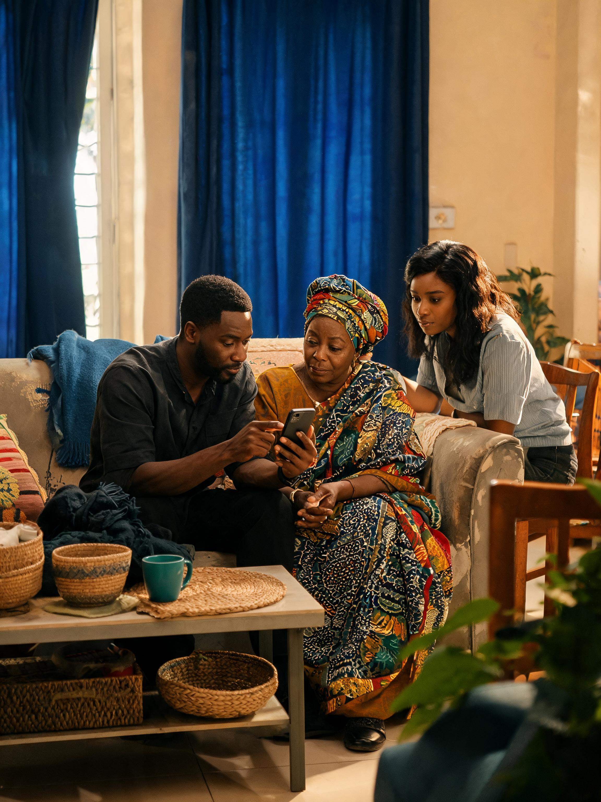
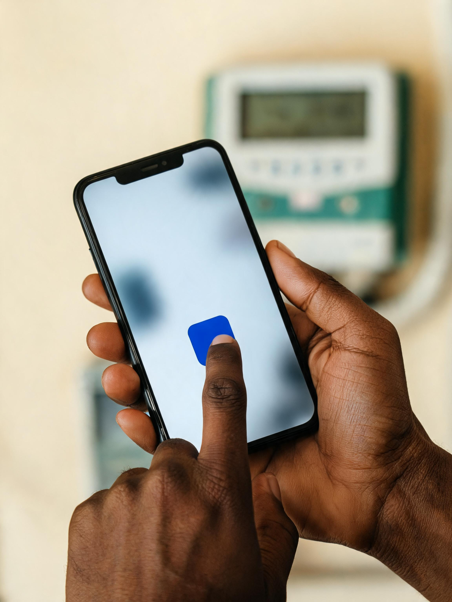

1Utility Bank is introducing Utility Banking, a banking proposition built around the essential services people and businesses depend on, and the organisations and infrastructure that provide them. At the consumer level, its defining product is the Utility Account: an account linked to a customer’s phone number that allows money sent by bank transfer to become airtime, data or other supported utility payments. Around this proposition, 1U intends to provide a broader suite of personal and business banking services, including savings, investments and intelligent security controls. On the institutional side, the bank also intends to finance utility providers, assets, infrastructure and renewable-energy projects.
The campaign must do more than launch another digital financial product. It must help Nigerians understand what Utility Banking is, why it matters and why they should trust 1U to deliver it. That breaks down into four connected communication tasks.
Make Utility Banking and the Utility Account immediately understandable.
Establish 1U as neither another fintech nor another traditional bank.
Show the service is secure, dependable and supported by a complete banking ecosystem.
Move people from awareness to a first utility payment, then into repeated use.
The brief identifies a broad audience: salaried professionals, students, SMEs, traders, gig workers, families, young professionals and digitally confident consumers. Incomes and lifestyles differ. What they share is that money is constantly being assigned to practical responsibilities such as electricity, airtime, data, transport, rent, healthcare, school fees, family support and business needs.
Expressed in a way that feels human, modern, uncomplicated, trustworthy and distinctly Nigerian.
1U is a full-service bank built around everyday financial life.
The Utility Account removes unnecessary steps safely and reliably.

The bank understands how Nigerians actually live.

Use a Utility Account for a first bill payment.
Make 1U part of a regular financial routine.
What we need to know before we finalise the plan.